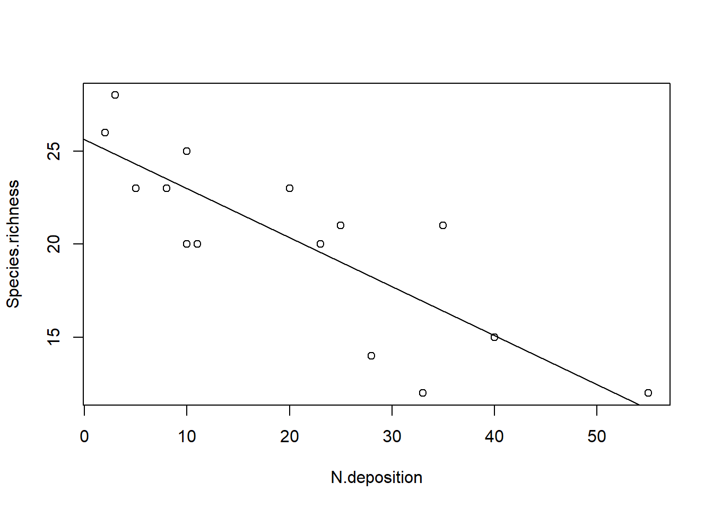

Two Sample t-test
data: size by cultivar
t = 2.0797, df = 18, p-value = 0.05212
alternative hypothesis: true difference in means between group a and group b is not equal to 0
95 percent confidence interval:
-0.03981237 7.83981237
sample estimates:
mean in group a mean in group b
15.3 11.4
# ANOVA ausführenaov(size ~ cultivar, data = blume)
Call:
aov(formula = size ~ cultivar, data = blume)
Terms:
cultivar Residuals
Sum of Squares 76.05 316.50
Deg. of Freedom 1 18
Residual standard error: 4.193249
Estimated effects may be unbalanced
summary(aov(size ~ cultivar, data = blume))
Df Sum Sq Mean Sq F value Pr(>F)
cultivar 1 76.0 76.05 4.325 0.0521 .
Residuals 18 316.5 17.58
---
Signif. codes: 0 '***' 0.001 '**' 0.01 '*' 0.05 '.' 0.1 ' ' 1
summary.lm(aov(size ~ cultivar, data = blume))
Call:
aov(formula = size ~ cultivar, data = blume)
Residuals:
Min 1Q Median 3Q Max
-7.300 -2.575 -0.350 2.925 9.700
Coefficients:
Estimate Std. Error t value Pr(>|t|)
(Intercept) 15.300 1.326 11.54 9.47e-10 ***
cultivarb -3.900 1.875 -2.08 0.0521 .
---
Signif. codes: 0 '***' 0.001 '**' 0.01 '*' 0.05 '.' 0.1 ' ' 1
Residual standard error: 4.193 on 18 degrees of freedom
Multiple R-squared: 0.1937, Adjusted R-squared: 0.1489
F-statistic: 4.325 on 1 and 18 DF, p-value: 0.05212
Call:
aov(formula = size ~ cultivar, data = blume2)
Terms:
cultivar Residuals
Sum of Squares 736.0667 528.6000
Deg. of Freedom 2 27
Residual standard error: 4.424678
Estimated effects may be unbalanced
summary(aov(size ~ cultivar, data = blume2))
Df Sum Sq Mean Sq F value Pr(>F)
cultivar 2 736.1 368.0 18.8 7.68e-06 ***
Residuals 27 528.6 19.6
---
Signif. codes: 0 '***' 0.001 '**' 0.01 '*' 0.05 '.' 0.1 ' ' 1
summary.lm(aov(size ~ cultivar, data = blume2))
Call:
aov(formula = size ~ cultivar, data = blume2)
Residuals:
Min 1Q Median 3Q Max
-7.300 -3.375 -0.300 2.700 9.700
Coefficients:
Estimate Std. Error t value Pr(>|t|)
(Intercept) 15.300 1.399 10.935 2.02e-11 ***
cultivarb -3.900 1.979 -1.971 0.059065 .
cultivarc 8.000 1.979 4.043 0.000395 ***
---
Signif. codes: 0 '***' 0.001 '**' 0.01 '*' 0.05 '.' 0.1 ' ' 1
Residual standard error: 4.425 on 27 degrees of freedom
Multiple R-squared: 0.582, Adjusted R-squared: 0.5511
F-statistic: 18.8 on 2 and 27 DF, p-value: 7.683e-06
aov.1<-aov(size ~ cultivar, data = blume2)summary(aov.1)
Df Sum Sq Mean Sq F value Pr(>F)
cultivar 2 736.1 368.0 18.8 7.68e-06 ***
Residuals 27 528.6 19.6
---
Signif. codes: 0 '***' 0.001 '**' 0.01 '*' 0.05 '.' 0.1 ' ' 1
summary.lm(aov.1)
Call:
aov(formula = size ~ cultivar, data = blume2)
Residuals:
Min 1Q Median 3Q Max
-7.300 -3.375 -0.300 2.700 9.700
Coefficients:
Estimate Std. Error t value Pr(>|t|)
(Intercept) 15.300 1.399 10.935 2.02e-11 ***
cultivarb -3.900 1.979 -1.971 0.059065 .
cultivarc 8.000 1.979 4.043 0.000395 ***
---
Signif. codes: 0 '***' 0.001 '**' 0.01 '*' 0.05 '.' 0.1 ' ' 1
Residual standard error: 4.425 on 27 degrees of freedom
Multiple R-squared: 0.582, Adjusted R-squared: 0.5511
F-statistic: 18.8 on 2 and 27 DF, p-value: 7.683e-06
# Berechnung Mittelwerte usw. zur Charakterisierung der Gruppenaggregate(size ~ cultivar, blume2, function(x) c(Mean =mean(x), SD =sd(x), Min =min(x), Max =max(x)))
cultivar size.Mean size.SD size.Min size.Max
1 a 15.300000 5.207900 8.000000 25.000000
2 b 11.400000 2.836273 7.000000 16.000000
3 c 23.300000 4.854551 17.000000 31.000000
lm.1<-lm(size ~ cultivar, data = blume2)summary(lm.1)
Call:
lm(formula = size ~ cultivar, data = blume2)
Residuals:
Min 1Q Median 3Q Max
-7.300 -3.375 -0.300 2.700 9.700
Coefficients:
Estimate Std. Error t value Pr(>|t|)
(Intercept) 15.300 1.399 10.935 2.02e-11 ***
cultivarb -3.900 1.979 -1.971 0.059065 .
cultivarc 8.000 1.979 4.043 0.000395 ***
---
Signif. codes: 0 '***' 0.001 '**' 0.01 '*' 0.05 '.' 0.1 ' ' 1
Residual standard error: 4.425 on 27 degrees of freedom
Multiple R-squared: 0.582, Adjusted R-squared: 0.5511
F-statistic: 18.8 on 2 and 27 DF, p-value: 7.683e-06
Tukeys Posthoc-Test
# Load librarylibrary("agricolae")
Error in library("agricolae"): there is no package called 'agricolae'
# Posthoc-TestHSD.test(aov.1, "cultivar", group =FALSE, console =TRUE)
Error in HSD.test(aov.1, "cultivar", group = FALSE, console = TRUE): could not find function "HSD.test"
Beispiel Posthoc-Labels in Plot
# ANOVA Mit Iris-Datenset, das in R integriert istaov.2<-aov(Sepal.Width ~ Species, data = iris)# Posthoc-TestHSD.test(aov.2, "Species", console =TRUE)
Error in HSD.test(aov.2, "Species", console = TRUE): could not find function "HSD.test"
# Plot mit labelsboxplot(Sepal.Width ~ Species, data = iris)
F test to compare two variances
data: blume2$size[blume2$cultivar == "a"] and blume2$size[blume2$cultivar == "b"]
F = 3.3715, num df = 9, denom df = 9, p-value = 0.08467
alternative hypothesis: true ratio of variances is not equal to 1
95 percent confidence interval:
0.8374446 13.5738284
sample estimates:
ratio of variances
3.371547
# Load librarylibrary("car")# Test auf Homogenität der VarianzenleveneTest(blume2$size[blume2$cultivar =="a"], blume2$size[blume2$cultivar =="b"],center = mean)
Levene's Test for Homogeneity of Variance (center = mean)
Df F value Pr(>F)
group 7 2.2598e+30 < 2.2e-16 ***
2
---
Signif. codes: 0 '***' 0.001 '**' 0.01 '*' 0.05 '.' 0.1 ' ' 1
Nicht-parametrische Alternativen, wenn Modellannahmen der ANVOA massiv verletzt sind
# Nicht-parametrische Alternative zu t-Testwilcox.test( blume2$size[blume2$cultivar =="a"], blume2$size[blume2$cultivar =="b"])
Wilcoxon rank sum test with continuity correction
data: blume2$size[blume2$cultivar == "a"] and blume2$size[blume2$cultivar == "b"]
W = 73, p-value = 0.08789
alternative hypothesis: true location shift is not equal to 0
Zum Vergleich normale ANOVA noch mal
summary(aov(size ~ cultivar, data = blume2))
Df Sum Sq Mean Sq F value Pr(>F)
cultivar 2 736.1 368.0 18.8 7.68e-06 ***
Residuals 27 528.6 19.6
---
Signif. codes: 0 '***' 0.001 '**' 0.01 '*' 0.05 '.' 0.1 ' ' 1
Bei starken Abweichungen von der Normalverteilung, aber ähnlichen Varianzen
Kruskal-Wallis-Test
kruskal.test(size ~ cultivar, data = blume2)
Kruskal-Wallis rank sum test
data: size by cultivar
Kruskal-Wallis chi-squared = 16.686, df = 2, p-value = 0.0002381
# Load librarylibrary("FSA")
Error in library("FSA"): there is no package called 'FSA'
# korrigierte p-Werte nach Bejamini-HochbergdunnTest(size ~ cultivar, method ="bh", data = blume2)
Error in dunnTest(size ~ cultivar, method = "bh", data = blume2): could not find function "dunnTest"
Bei erheblicher Heteroskedastizität, aber relative normal/symmetrisch verteilten Residuen
Welch-Test
oneway.test(size ~ cultivar, var.equal = F, data = blume2)
One-way analysis of means (not assuming equal variances)
data: size and cultivar
F = 21.642, num df = 2.000, denom df = 16.564, p-value = 2.397e-05
cultivar house size
1 a yes 20
2 a yes 19
3 a yes 25
4 a yes 10
5 a yes 8
6 a yes 15
7 a yes 13
8 a yes 18
9 a yes 11
10 a yes 14
11 a no 12
12 a no 15
13 a no 16
14 a no 7
15 a no 8
16 a no 10
17 a no 12
18 a no 11
19 a no 13
20 a no 10
21 b yes 30
22 b yes 19
23 b yes 31
24 b yes 23
25 b yes 18
26 b yes 25
27 b yes 26
28 b yes 24
29 b yes 17
30 b yes 20
31 b no 10
32 b no 12
33 b no 11
34 b no 13
35 b no 10
36 b no 25
37 b no 12
38 b no 30
39 b no 26
40 b no 13
41 c yes 15
42 c yes 13
43 c yes 18
44 c yes 11
45 c yes 14
46 c yes 25
47 c yes 39
48 c yes 38
49 c yes 28
50 c yes 24
51 c no 10
52 c no 12
53 c no 11
54 c no 13
55 c no 10
56 c no 9
57 c no 2
58 c no 4
59 c no 7
60 c no 13
boxplot(size ~ cultivar + house, data = blume3)
summary(aov(size ~ cultivar + house, data = blume3))
Df Sum Sq Mean Sq F value Pr(>F)
cultivar 2 417.1 208.5 5.005 0.01 *
house 1 992.3 992.3 23.815 9.19e-06 ***
Residuals 56 2333.2 41.7
---
Signif. codes: 0 '***' 0.001 '**' 0.01 '*' 0.05 '.' 0.1 ' ' 1
summary(aov(size ~ cultivar + house + cultivar:house, data = blume3))
Df Sum Sq Mean Sq F value Pr(>F)
cultivar 2 417.1 208.5 5.364 0.0075 **
house 1 992.3 992.3 25.520 5.33e-06 ***
cultivar:house 2 233.6 116.8 3.004 0.0579 .
Residuals 54 2099.6 38.9
---
Signif. codes: 0 '***' 0.001 '**' 0.01 '*' 0.05 '.' 0.1 ' ' 1
# Kurzschreibweise: "*" bedeutet, dass Interaktion zwischen cultivar und house eingeschlossen wirdsummary(aov(size ~ cultivar * house, data = blume3))
Df Sum Sq Mean Sq F value Pr(>F)
cultivar 2 417.1 208.5 5.364 0.0075 **
house 1 992.3 992.3 25.520 5.33e-06 ***
cultivar:house 2 233.6 116.8 3.004 0.0579 .
Residuals 54 2099.6 38.9
---
Signif. codes: 0 '***' 0.001 '**' 0.01 '*' 0.05 '.' 0.1 ' ' 1
summary.lm(aov(size ~ cultivar + house, data = blume3))
Call:
aov(formula = size ~ cultivar + house, data = blume3)
Residuals:
Min 1Q Median 3Q Max
-9.733 -4.696 -1.050 2.717 19.133
Coefficients:
Estimate Std. Error t value Pr(>|t|)
(Intercept) 9.283 1.667 5.570 7.52e-07 ***
cultivarb 6.400 2.041 3.135 0.00273 **
cultivarc 2.450 2.041 1.200 0.23509
houseyes 8.133 1.667 4.880 9.19e-06 ***
---
Signif. codes: 0 '***' 0.001 '**' 0.01 '*' 0.05 '.' 0.1 ' ' 1
Residual standard error: 6.455 on 56 degrees of freedom
Multiple R-squared: 0.3766, Adjusted R-squared: 0.3432
F-statistic: 11.28 on 3 and 56 DF, p-value: 6.848e-06
Analysis of Variance Table
Model 1: blume3$size ~ blume3$house
Model 2: blume3$size ~ blume3$cultivar * blume3$house
Res.Df RSS Df Sum of Sq F Pr(>F)
1 58 2750.3
2 54 2099.6 4 650.73 4.1841 0.005045 **
---
Signif. codes: 0 '***' 0.001 '**' 0.01 '*' 0.05 '.' 0.1 ' ' 1
# Visualisierung 2-fach-Interaktion etwas elaborierter mit ggplotlibrary("sjPlot")library("ggplot2")theme_set(theme_classic())aov <-aov(size ~ cultivar * house, data = blume3)plot_model(aov, type ="pred", terms =c("cultivar", "house"))
# Geht auch für 3-fach-Interaktionen# Datensatz zum Einfluss von Management und Hirschbeweidung auf den PflanzenartenreichtumRiesch <-read.delim("datasets/statistik/Riesch_et_al_ReMe_Extract.csv", sep =";", stringsAsFactors =TRUE)str(Riesch)
aov.deer <-aov(Species.richness ~ Year * Treatment * Plot.type, data = Riesch)plot_model(aov.deer, type ="pred", terms =c("Year", "Treatment", "Plot.type"))
Korrelationen
## Korrelationen und Regressionen# Datensatz zum Einfluss von Stickstoffdepositionen auf den Pflanzenartenreichtumdf <-read.delim("datasets/statistik/Nitrogen.csv", sep =";")summary(df)
N.deposition Species.richness
Min. : 2.00 Min. :12.0
1st Qu.: 9.00 1st Qu.:17.5
Median :20.00 Median :21.0
Mean :20.53 Mean :20.2
3rd Qu.:30.50 3rd Qu.:23.0
Max. :55.00 Max. :28.0
# Plotten der Beziehungplot(Species.richness ~ N.deposition, data = df)
# Daten anschauenscatterplot(Species.richness ~ N.deposition, data = df)
Spearman's rank correlation rho
data: df$Species.richness and df$N.deposition
S = 1015.5, p-value = 0.0002259
alternative hypothesis: true rho is not equal to 0
sample estimates:
rho
-0.8133721
Kendall's rank correlation tau
data: df$Species.richness and df$N.deposition
z = -3.308, p-value = 0.0009398
alternative hypothesis: true tau is not equal to 0
sample estimates:
tau
-0.657115
# Jetzt als Regressionlm <-lm(Species.richness ~ N.deposition, data = df)anova(lm) # ANOVA-Tabelle, 1. Möglichkeit
Analysis of Variance Table
Response: Species.richness
Df Sum Sq Mean Sq F value Pr(>F)
N.deposition 1 233.91 233.908 28.028 0.0001453 ***
Residuals 13 108.49 8.346
---
Signif. codes: 0 '***' 0.001 '**' 0.01 '*' 0.05 '.' 0.1 ' ' 1
summary.aov(lm) # ANOVA-Tabelle, 2. Möglichkeit
Df Sum Sq Mean Sq F value Pr(>F)
N.deposition 1 233.9 233.91 28.03 0.000145 ***
Residuals 13 108.5 8.35
---
Signif. codes: 0 '***' 0.001 '**' 0.01 '*' 0.05 '.' 0.1 ' ' 1
summary(lm) # Regressionskoeffizienten
Call:
lm(formula = Species.richness ~ N.deposition, data = df)
Residuals:
Min 1Q Median 3Q Max
-4.9184 -1.9992 0.4493 2.0015 4.6081
Coefficients:
Estimate Std. Error t value Pr(>|t|)
(Intercept) 25.60502 1.26440 20.251 3.25e-11 ***
N.deposition -0.26323 0.04972 -5.294 0.000145 ***
---
Signif. codes: 0 '***' 0.001 '**' 0.01 '*' 0.05 '.' 0.1 ' ' 1
Residual standard error: 2.889 on 13 degrees of freedom
Multiple R-squared: 0.6831, Adjusted R-squared: 0.6588
F-statistic: 28.03 on 1 and 13 DF, p-value: 0.0001453
# Signifikantes Ergebnis visualisierenplot(Species.richness ~ N.deposition, data = df)abline(lm)

Beispiele Modelldiagnostik
par(mfrow =c(2, 2)) # 4 Plots in einem Fensterplot(lm(b ~ a))